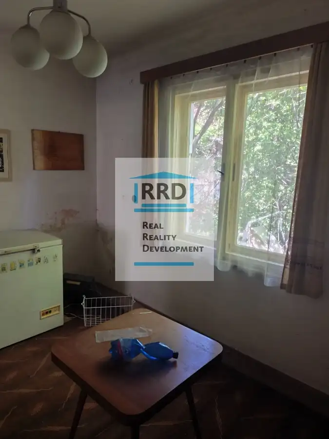
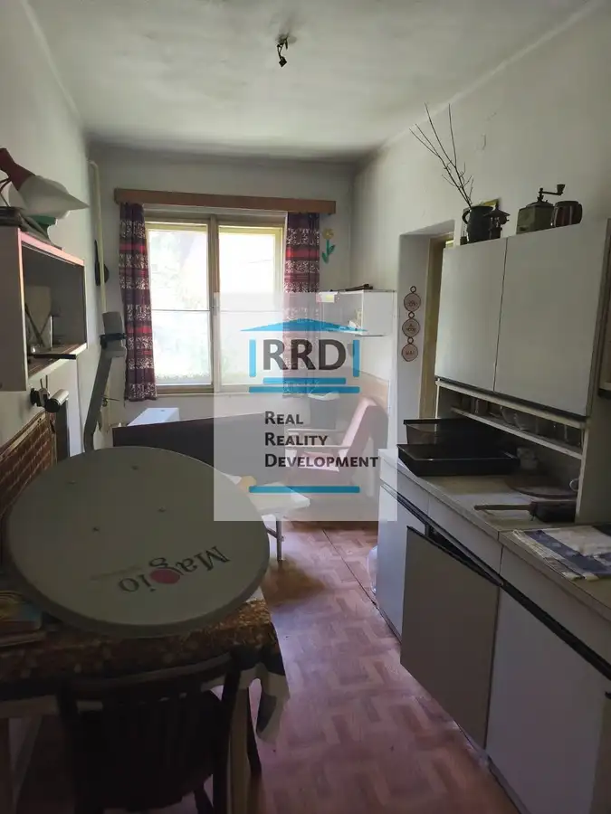
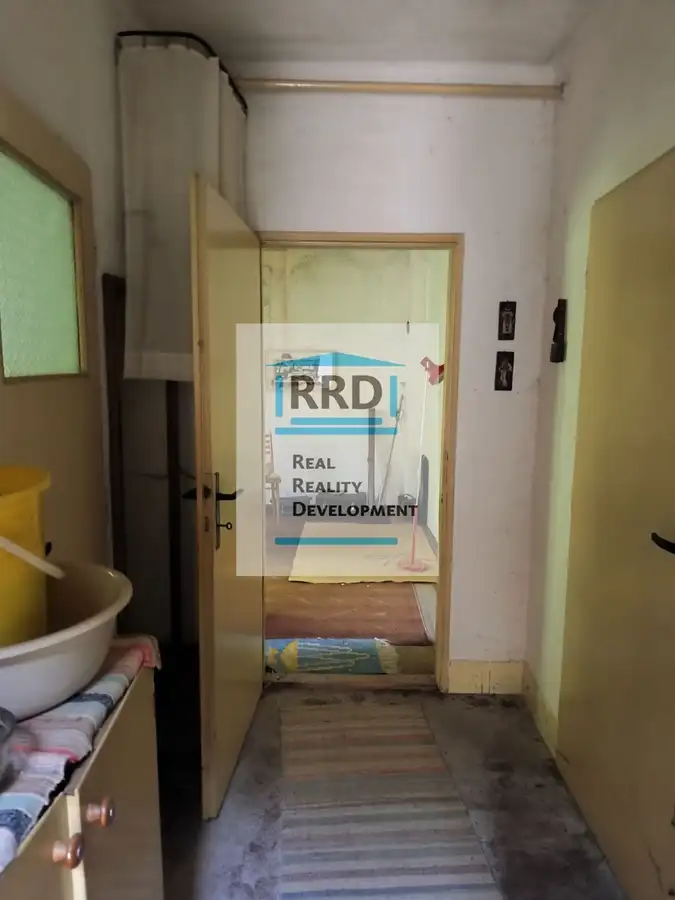
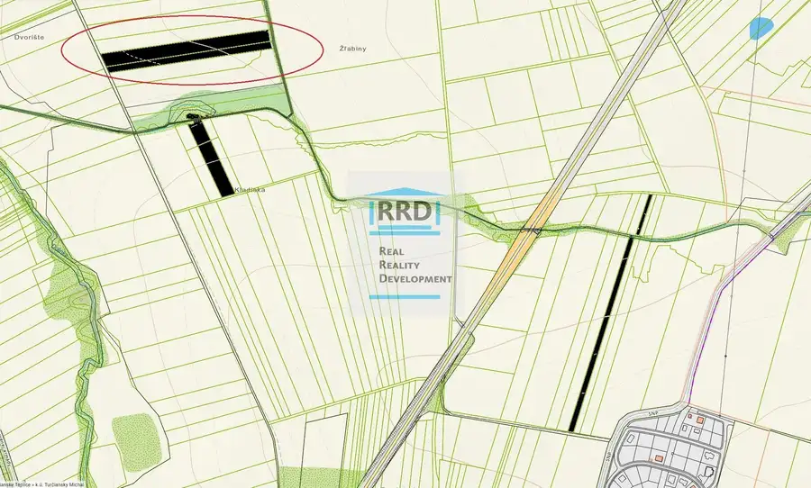
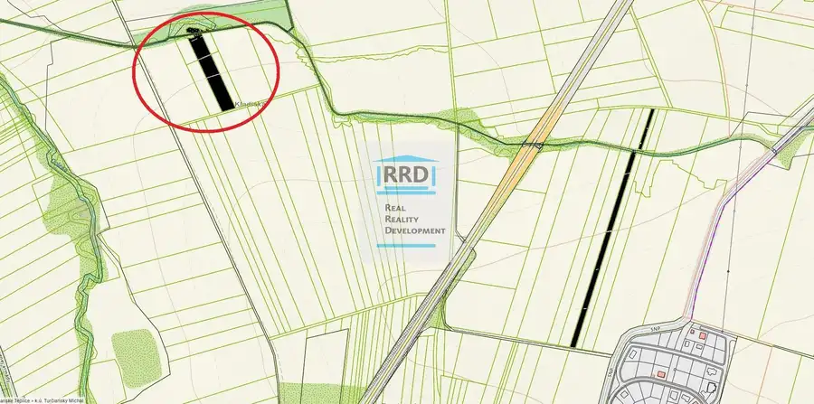
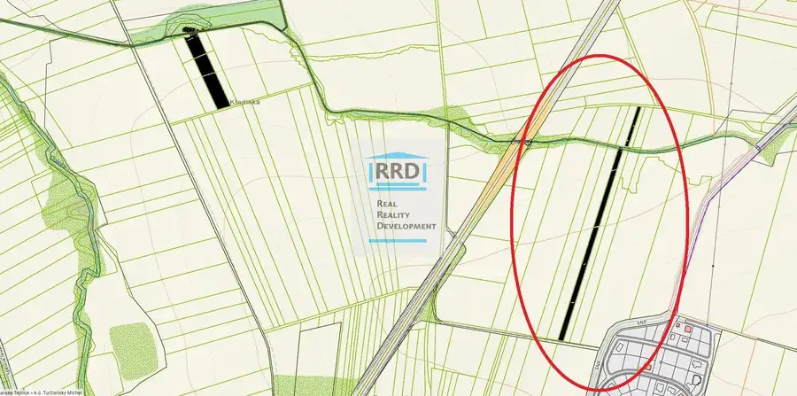

Predaj · Dom
Dva rodinné domy v obci Bystrička.
Bystrička
28 000 €140 € za m²



- Plocha200 m²
- StavPôvodný stav
O nehnuteľnosti
Predám dva rodinné domy v pôvodnom stave, situované vo vyhľadávanej obci Bystrička, v prostredí priamo pri potoku. Celková úžitková plocha oboch domov je cca 200 m² a vyžadujú kompletnú rekonštrukciu.Nehnuteľnosti sa predávajú výlučne ako stavby, bez pozemku, pripojené sú na všetky Inžinierske siete (vodovod, kanalizácia, plyn a elektrina).Jedná sa o stigmatizované nehnuteľnosti, poznačené tragickou históriou. Predávajú sa ako stoja a ležia.Právny a skutkový stav je zohľadnený v ponúkanej cene.Bližšie informácie: Mgr. Dušan Hurta, 0907154853, hurta@rrd.sk
Parametre
- Druh
- Rodinný dom
- Dátum zverejnenia
- 02. 10. 2026
- Energetický certifikát budovy
- nie je
- Plocha pozemku
- 0 m²
- Počet nadzemných podlaží
- 1
- Stav nehnuteľnosti
- Pôvodný stav
- Terén pozemku
- Rovinatý
- Typ
- Predaj
- Typ konštrukcie
- Tehlová
- Vybavenie
- Pivnica
- Zastavaná plocha
- 250 m²
- Úžitková plocha
- 200 m²
Kde to je


Ďalšie ponuky
Celá ponukaMohlo by Vás zaujímať

PozemokNové Cena na vyžádáníPozemky v Turčianskych Tepliciach, obec Bodorová, 13672 m2. Turčianske Teplice 13672 m²
PozemokNové Cena na vyžádáníPozemky v Turčianskych Tepliciach, mestská časť Turčiansky Michal, 5159 m2. Turčianske Teplice 5159 m²
PozemokNové Cena na vyžádáníPozemky v Turčianskych Tepliciach, mestská časť Turčiansky Michal, 5436 m2. Turčianske Teplice 5436 m²